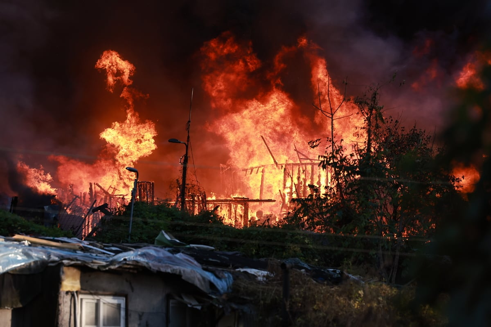
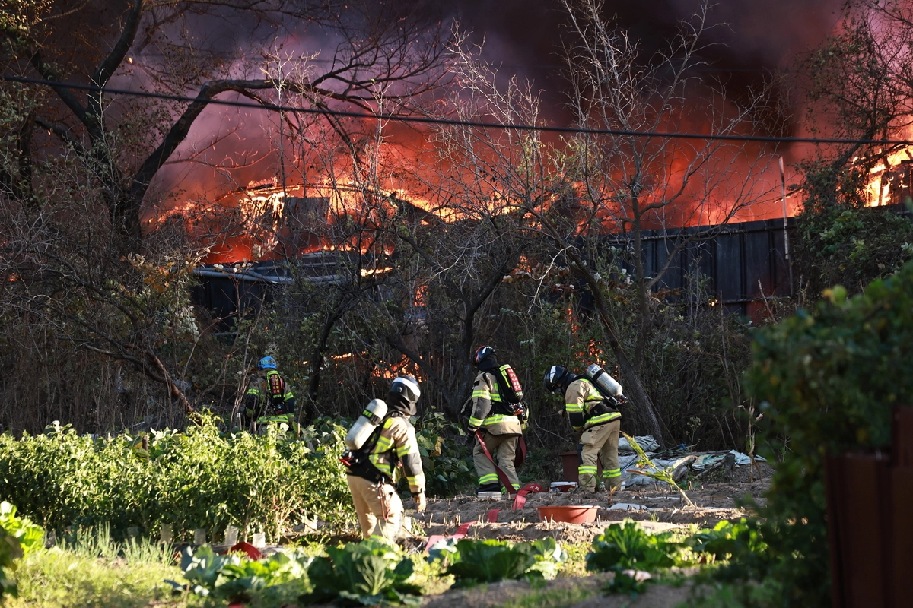

서울 강남의 ‘마지막 판자촌’인 개포동 구룡마을에 불이 나 소방 당국이 ‘대응 2단계’를 발령하고 진화에 나섰다.
27일 소방 당국에 따르면 이날 오후 3시 50분께 강남구 개포동 구룡마을에서 “쓰레기장에 불이 난 것 같다”는 신고가 접수됐다.
현장에 출동한 소방 당국은 판자촌 특성상 불길이 번질 우려가 크다고 보고 오후 4시 30분께 대응 단계를 2단계로 높였다.
대응 2단계는 인접한 소방서 인력과 장비를 동원하는 경보령으로 현재 소방관 210명이 투입돼 불을 끄고 있다.
지금까지 확인된 인명 피해는 없다. 소방 당국은 불길을 잡는 대로 정확한 화재 원인과 피해 규모를 조사할 방침이다.


재개발 드가자